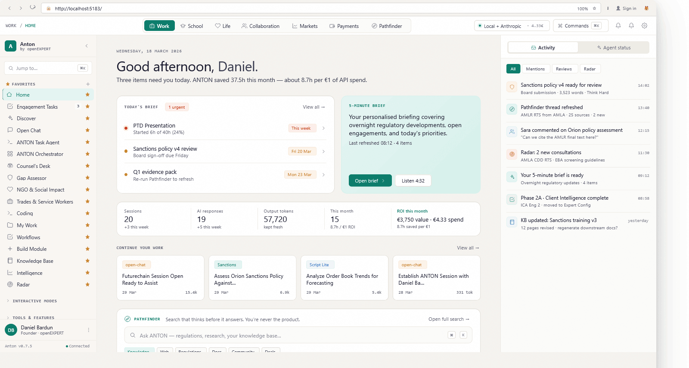
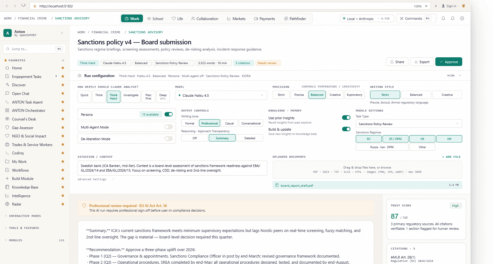
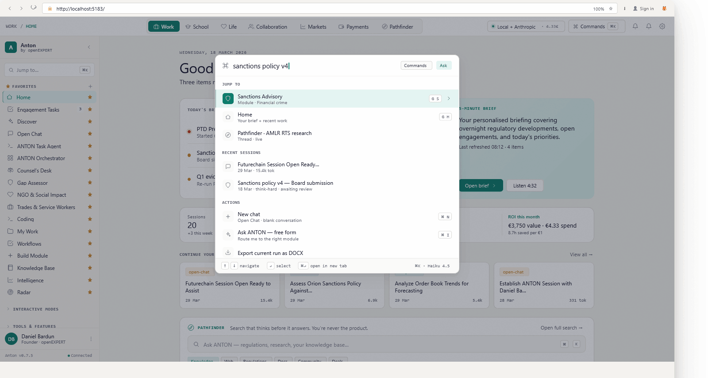
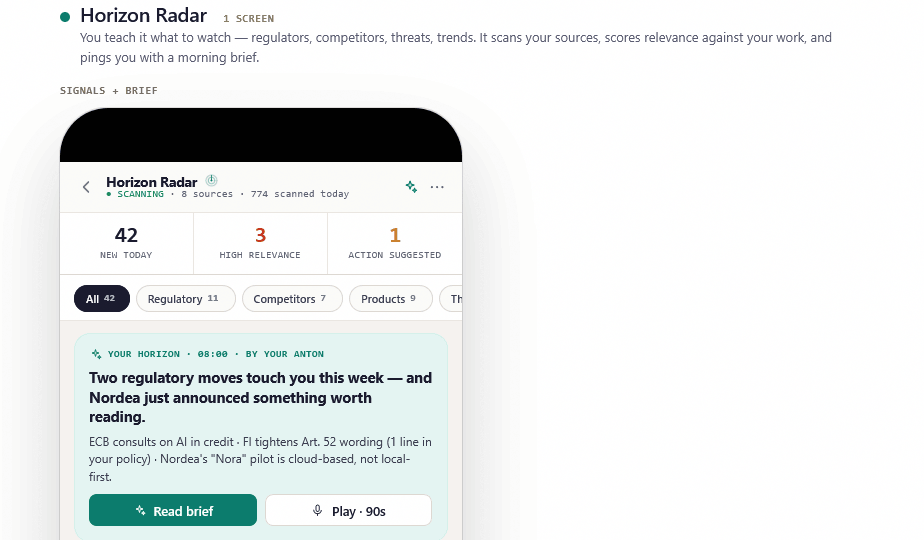
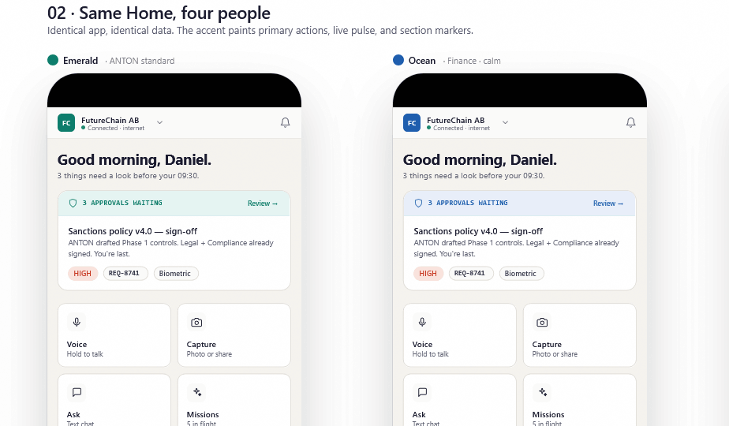
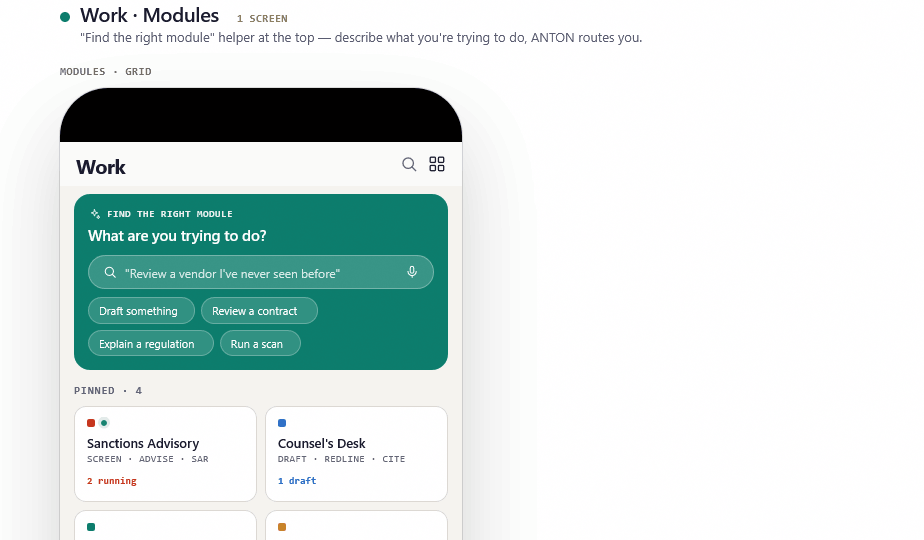

The AI workspace for regulated professionals.
ANTON gives compliance, financial-crime, legal and risk teams an expert workspace — not another chat box. A web cockpit on your laptop, a companion on your phone, and a suite of professional modules that know your domain.

An expert workspace, not a chat box.
AI in your browser is great for prose. But a regulated professional doesn't write prose — they investigate, decide, document and defend. ANTON is built around that workflow: modules that know what a sanctions review or a SAR actually contains, runs that capture every decision, and an audit trail you can hand to a regulator.
Compliance and financial-crime teams in banks, PSPs, EMIs, MiCA-authorized CASPs. Legal and risk teams in obliged entities. Auditors and consultants who live in their work.
Hosts a library of professional modules — Sanctions Advisory, Pathfinder, Horizon Radar, Markets, Adverse Media, SARs & reports — each with its own configuration, sources and output.
Built by people who lived the workflow at SEB, the Riksbank, EY and Advisense. Powered by Claude. Designed so the trail of every decision is one click away.
The bottleneck isn't intelligence. It's context.
Everyone is racing toward AGI. ANTON took the other road. Intelligence is now a commodity — three API calls and you're done. What compounds is professional context: the regulations a team works under, the controls already in place, the questions a regulator asked last quarter, the way this firm writes a SAR. That's what a colleague learns over years. We built a system that learns it on purpose.
AGI
Make the model smarter, more general, more capable of any task. The bet: sufficiently advanced reasoning replaces the expert. The reality: the model still doesn't know your firm, your regulators, your last six engagements, or what a "good" deliverable looks like in your industry.
APCI
Take the smartest model available and give it a proper professional education: seven layers of prompt architecture, a knowledge graph that grows with every run, forty domain personas, and a trust score on every output. The result: expert results from a non-expert workflow. ANTON doesn't replace your colleague — it becomes one.
Work. School. Life.
The same architecture serves a compliance officer drafting a SAR, a graduate student structuring a thesis, and a citizen reading a contract before they sign. Different modules, same engine — same audit trail, same trust score, same control over what ANTON sees and remembers.
The professional cockpit.
For regulated industries — banks, PSPs, EMIs, CASPs, law firms, advisors. The flagship surface, and where most of this site lives.
- Sanctions Advisory · SAR Drafting · Adverse Media · Horizon Radar · Pathfinder
- Engagement scoping, deliverables tracking, scope agreements
- Six-dimensional trust score on every output
The student's tutor.
For learners at any stage — from secondary school to doctoral research. Not a homework machine. A patient, structured, transparent collaborator.
- Topic explainers, concept maps, research scaffolding
- Thesis structuring, source critique, citation hygiene
- Trust score teaches what makes a claim defensible
The citizen's advocate.
For everyday decisions that deserve more care than a chat tab — contracts, tenancy, benefits, healthcare, taxes. Plain language. Sources cited.
- Document understanding with rights and obligations called out
- Letter and form drafting that holds up under scrutiny
- Local-first by default — your life stays on your machine
Your laptop becomes the workbench.
Sidebar with favorites and modules pinned. ⌘K command palette to jump anywhere. Run header that captures the configuration, model and depth used. Right rail with trust score, citations and timeline. Bottom composer to iterate on the document. Light, dark and corporate themes. Eight accent colours.
One workspace, every module.
Switch from a sanctions review to a horizon scan to an open chat without leaving the cockpit. Recents, favorites and search travel with you.
- Collapsible sidebar with favorites pinned and sections you can fold
- ⌘K command palette to jump to any module, run, or recent session
- Notifications & shortcuts overlay always one keystroke away
- Three themes, eight accents — make it yours, keep it professional
Every output is a run.
A run captures the question, the configuration, the sources, the output and the trail. Iterate via chat, fork into a new version, export as DOCX, PDF or Markdown.
- Run header with model, depth, precision, persona, word count
- Collapsible config panel with every dial: Think Hard, Multi-agent, Deliberation, Knowledge Memory, Sanctions Regimes
- Trust score & citations on the right rail of every run
- Chat composer at the bottom to refine without losing the version history


Modules that know your domain.
Each module is more than a prompt — it has its own configuration surface, its own sources, its own output template and its own seat in the audit trail. The modules below are the ones most regulated teams reach for; the library covers another four hundred across compliance, legal, finance, audit, risk, data and operations.
Sanctions Advisory
Generate audit-grade sanctions analyses across EU, UK, US and FATF regimes — with citations.
Pathfinder
Find the right module for the question you're holding. Suggests configuration and sources.
Horizon Radar
Continuous scanning of regulations, news and supervisory communications you've subscribed to.
Markets
Morning brief plus on-demand analysis of price action, flows and counterparty exposure.
Adverse Media
Multilingual, cited adverse-media checks tied to your case file — not a separate tab.
Screening
Real-time payment screening with explainable reason codes per hit, on every regime.
Reports & SARs
Pre-formatted SARs for FI, FIU, goAML and equivalents. Generated, reviewed, signed.
Audit Trail
Immutable timeline of every query, decision and override. Export to PDF or evidence vault.
Search that thinks. Discovery that maps. Markets that score themselves.
Most modules do their job and step back. These three earn their own real-estate because they reshape how a team works between the discrete tasks — they are how you start a session, how you scope an engagement, and how you keep ANTON honest under pressure.
The search engine that thinks before it answers.
Seven search modes. Source-quality framework. Two-step reasoning trail visible inline. Domain-aware query enrichment. Cost transparent on every run.
- Quick · Standard · Comprehensive · Deep · Specialist · Critical · Iterative
- "Improve my search" wizard turns a one-liner into a precise brief
- Pipe any result straight into a Pro module with context preserved
Find where AI actually creates value for your firm.
The hardest problem in AI adoption isn't the technology — it's knowing where to start. Discovery maps your workflows to the modules that fit, with four depth levels.
- Lite (15–30 min) for a quick orientation
- Standard (1–2 h) and Professional (3–4 h) for engagement scoping
- Expert (full day) for an enterprise-wide AI adoption plan
The honesty machine: predictions that get a verdict.
Markets is APCI under maximum pressure. Five expert personas form a Consul Council, debate, and synthesise a position. Every prediction is tracked against the outcome.
- Five-perspective Consul Council with named reasoning trails
- Public ANTON Indexes — accuracy is a scoreboard, not a claim
- Morning brief, on-demand analysis, prediction tracking
AI is not here to replace your colleagues. It's here to become one.— ANTON design principle №1
The regulator just published. ANTON already read it.
Set up a radar around the topics you care about — sanctions amendments, supervisory letters, new MiCA guidance, ESG taxonomy updates — and ANTON scans continuously. New, relevant, action-suggested. Three colours, one glance.
- ● Live scanning across feeds you subscribe to
- ● Daily traffic-light digest: new · high-relevance · action-suggested
- ● One-click follow-up: open a Pathfinder run on any item
- ● Pushes to the Companion app so you see it on the train

Seven layers turn raw intelligence into professional context.
Underneath every module is the same architecture: knowledge atoms with confidence scores and source trails, a knowledge graph that links clients, regulations, controls and risks, a feedback loop that sharpens with every correction, and a pattern engine that surfaces what no single run could see. The longer ANTON works alongside a team, the more it is theirs.
Knowledge atoms
Discrete facts, insights and conclusions. Every atom carries a confidence score, a source trail and a temporal validity window.
Knowledge graph
Typed relationships between clients, regulations, controls, risks, people and systems. The same entity threads across every run.
Domain-aware retrieval
Ranking that understands compliance is not law is not finance. Each module gets the right context, not just the closest match.
Feedback loop
Every accept, edit and reject is a signal. The next run is sharper than the last. This is how compounding looks in practice.
Pattern engine
Temporal correlations, entity convergences, cascade sequences, coverage gaps. The things no single review would catch.
Intelligence dashboard
The accumulated knowledge made visible. Browse atoms, walk the graph, audit the pattern detections that drove a decision.
Prompt assembly
The final layer. The model gets exactly the context it needs to answer like a colleague who has been here for years.
What happens when ANTONs connect.
Each ANTON is sovereign. It runs on your machine, learns your context, never phones home. But sovereignty doesn't mean isolation. The ANTON Agent Protocol lets two instances identify each other, establish trust and exchange knowledge atoms — with provenance preserved and your consent at every step. Individual intelligence becomes collaborative.
Knowledge that travels with consent.
Two ANTONs identify each other, verify trust, and exchange atoms across the boundary. No central server. No silent sync. Provenance preserved at every hop.
- Companion app gateway — your phone is the bridge between instances
- Specialized agents — a public agent storefront for niche expertise
- The .anton bundle — knowledge as a network good, ratings and curation included
- Markets indexes & community tab — the proving ground meets the people
ANTON in your pocket. Same expertise, one tap away.
Pair your phone to your cockpit by QR. Pick your accent colour. Approve actions on the move, read the morning brief, run Pathfinder when an email lands. Unified Mail and Calendar, P2P messages with people you've connected to, ANTON Pay for invoices, KYC verification all inside the app.

Everything you need on the move.
- Daily brief — what changed, what's pending, what to approve
- Approvals inbox — sign off on documents from your phone, audit trail intact
- Unified Mail & Calendar — ANTON Mail by default, connect Gmail / Outlook / iCloud
- Messaging — P2P chat with people you've connected to, plus AI threads
- ANTON Pay — send, receive, request, with verification built in
- Pathfinder & Horizon Radar — find a module or scan the latest, one tap
- Eight accent colours — pick yours, applies across the cockpit too

Standard for clarity. Pro for depth.
The same workspace serves a non-technical user who wants a clear answer and a compliance officer who wants every dial. Switch modes per workspace; everyone speaks the same audit trail.
Standard
- Pathfinder picks the right module behind the scenes
- One configuration: ask the question, get the answer
- Citations and trust score still attached — just unobtrusive
- Designed for busy adults, not power users
Pro
- Full run-configuration panel: depth, model, precision, persona, deliberation
- Knowledge memory toggles — use prior, build & update
- Module-specific surfaces: Sanctions Regimes, situation context, uploads
- Right rail with citations, timeline, trust hash for every claim
Local-first. Model-portable. Open source.
Most AI products treat privacy as a checkbox. ANTON treats it as a foundation. The embedding layer runs on Ollama on your machine. Cloud LLM calls are an informed trade-off you make, not a default you live with. GDPR Controller / Processor analysis is built into the workflow. The whole codebase is Apache 2.0.
Embeddings stay home.
The vector layer runs on Ollama on your laptop. Your knowledge graph never leaves the device unless you tell it to.
Five families, one engine.
Claude · Mistral · GPT · Gemini · local Ollama. Switch per module, per run, per tenant. Your context comes with you.
Apache 2.0.
github.com/altspace-hub/ANTON. Audit the architecture. Self-host. Fork it. Built by Daniel Bardun & FutureChain AB.
GDPR + DORA, in the workflow.
Controller / Processor analysis on every data flow. Operational resilience controls baked in, not bolted on.
Built for the obligation, not the buzzword.
Replace three screening tools with one workspace.
Sanctions, PEP and adverse-media checks consolidated. Analysts stop tab-juggling; reviewers stop re-explaining.
Survive an audit without a war room.
Auditor asks for the trail behind a decision; ANTON produces the timestamped chain in one click — no archeology needed.
Stand up a compliant ops function from day one.
New MiCA license, new obligations. ANTON ships with templates, watchlists and reports tuned for crypto-asset service providers.
See ANTON in 30 minutes. Bring questions, not data.
We walk through your scenario, show the cockpit and the modules that match, demo the companion app, and answer the regulator-shaped questions you actually care about. No pre-work required.
Schedule a demo →